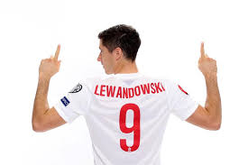
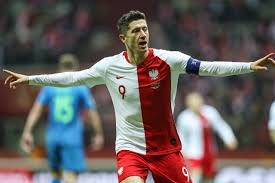
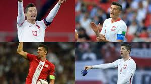

25 marca 2008 zadebiutował w reprezentacji Polski do lat 21 w zremisowanym 0:0 meczu towarzyskim z Anglią. Łącznie wystąpił w 3 spotkaniach tej kadry. We wrześniu 2008 został powołany przez Leo Beenhakkera do reprezentacji Polski na mecze eliminacji Mistrzostw Świata 2010 ze Słowenią i San Marino. Zremisowany 1:1 mecz ze Słowenią w całości spędził na ławce rezerwowych. 10 września 2008 zadebiutował w reprezentacji Polski w meczu wyjazdowym eliminacji przeciwko San Marino, zmieniając w 59. minucie meczu Marka Saganowskiego. W 67. minucie tego spotkania, dobijając niecelne uderzenie Euzebiusza Smolarka, strzelił swojego pierwszego gola dla reprezentacji czym ustalił wynik końcowy na 2:0. 2 maja 2012 został powołany przez Franciszka Smudę na Mistrzostwa Europy 2012. W 17. minucie meczu otwarcia z Grecją strzelił głową gola na 1:0 po podaniu Jakuba Błaszczykowskiego. Mecz zakończył się wynikiem 1:1. W spotkaniach z Rosją i Czechami Lewandowski rozegrał pełne 90 minut. Ostatecznie Polska odpadła z turnieju po fazie grupowej. Przed towarzyskim meczem z Urugwajem, który odbył się 14 listopada 2012, odebrał z rąk prezesa PZPN, Zbigniewa Bońka, pamiątkową paterę z okazji swego pięćdziesiątego występu w reprezentacji. Tym samym Lewandowski stał się drugim najmłodszym zawodnikiem w historii, który zaliczył 50 występów w polskiej kadrze narodowej, plasując się zaraz po Władysławie Żmudzie.
W meczu piłkarskich eliminacji Mistrzostw Świata 2014 z San Marino wystąpił jako kapitan drużyny (w miejsce swojego klubowego kolegi Jakuba Błaszczykowskiego, który w tym meczu nie zagrał z powodu kontuzji) i zdobył dwie bramki z rzutów karnych. Były to pierwsze zdobyte bramki w reprezentacji od czasu Mistrzostw Europy. 19 listopada 2013 w meczu z Irlandią rozegrał 60. spotkanie w barwach reprezentacji Polski i dołączył do Klubu Wybitnego Reprezentanta. 1 lutego 2014 został ogłoszony kapitanem kadry narodowej w zastępstwie za kontuzjowanego Jakuba Błaszczykowskiego. 9 grudnia Adam Nawałka poinformował o objęciu przez niego na stałe funkcji kapitana reprezentacji Polski. 7 września 2014 strzelił pierwszego hat tricka dla Polski, zdobywając cztery bramki podczas meczu z Gibraltarem (7:0). 13 czerwca 2015 po raz kolejny zdobył hat-tricka w meczu z Gruzją (4:0) podczas eliminacji do Mistrzostw Europy 2016. 4 września 2015 zdobył jedynego gola w przegranym 1:3 wyjazdowym meczu z Niemcami. Trzy dni później w wygranym 8:1 pojedynku z Gibraltarem strzelił 2 gole. 8 października 2015 w zremisowanym 2:2 spotkaniu ze Szkocją zdobył 2 bramki, w tym wyrównującą w ostatniej akcji meczu. 11 października 2015 w wygranym 2:1 starciu z Irlandią strzelił gola na wagę awansu reprezentacji Polski na Mistrzostwa Europy we Francji. Stał się wówczas pierwszym polskim piłkarzem, który strzelał gola w 5 kolejnych meczach reprezentacji polski o punkty. Lewandowski trafiał do siatki kolejno: Gruzji, Niemiec, Gibraltaru, Szkocji i Irlandii zdobywając w tych spotkaniach 9 bramek.  Łącznie w eliminacjach do Mistrzostw Europy 2016 strzelił 13 goli, dzięki czemu został królem strzelców tych rozgrywek i wyrównał rekord eliminacji ustanowiony w kwalifikacjach do Mistrzostw Europy 2008 przez Davida Healy’ego z Irlandii Północnej. Polak został również wybrany najlepszym zawodnikiem eliminacji. 12 maja 2016 został powołany przez Adama Nawałkę do szerokiej kadry na Mistrzostwa Europy 2016 we Francji. 30 maja 2016 Adam Nawałka oficjalnie powołał go do ścisłego składu na mistrzostwa Europy. Na Euro 2016, Polska, po pokonaniu Irlandii Północnej (1:0) i Ukrainy (1:0), a także po bezbramkowym remisie z Niemcami, zajęła drugie miejsce w grupie C i po raz pierwszy w historii awansowała do fazy pucharowej Mistrzostw Europy. Następnie po wyeliminowaniu w 1/8 finału, Szwajcarii (1:1, k. 5:4), odpadła dopiero w ćwierćfinale po porażce w rzutach karnych (1:1, k. 3:5) z Portugalią. Lewandowski, jako kapitan zespołu, wystąpił we wszystkich 5 meczach kadry na turnieju i strzelił 1 gola – we wspomnianym meczu ćwierćfinałowym z Portugalią, kiedy to w 100. sekundzie spotkania, po asyście Kamila Grosickiego, strzelił drugą najszybszą bramkę w historii Mistrzostw Europy. W 2016, strzelając gole kolejno Portugalii w ćwierćfinale Euro 2016 oraz Kazachstanowi, Danii, Armenii i Rumunii w eliminacjach do Mistrzostw Świata 2018, wyrównał rekord z 2015 dotyczący strzelenia bramki w pięciu kolejnych meczach kadry o punkty. Strzelając dwa gole z Rumunią, zdobył 27. bramkę w meczach reprezentacji o stawkę, pobijając rekord 25 trafień Włodzimierza Lubańskiego.
26 marca 2017, strzelając bramkę w meczu eliminacji do Mistrzostw Świata 2018, przeciwko Czarnogórze (2:1), został rekordzistą reprezentacji Polski, jako pierwszy w historii, zdobywając bramkę w sześciu kolejnych spotkaniach kadry. Ponadto Lewandowski, dokonał tego wyłącznie w spotkaniach o stawkę. Wspomnianą bramką wyrównał także rekord 8 goli strzelonych przez Polaka, w jednej edycji kwalifikacji do mundialu, ustanowiony w 2001 przez Emmanuela Olisadebe. Gol strzelony w meczu z Czarnogórą był także pierwszą jego bramką w reprezentacji Polski zdobytą bezpośrednio z rzutu wolnego. 10 czerwca 2017, w meczu eliminacji do Mistrzostw Świata, przeciwko Rumunii (3:1), strzelił trzy bramki czym poprawił swoje indywidualne rekordy ustanowione w poprzednim meczu kadry. Lewandowski został pierwszym piłkarzem, który zdobywał bramki w siedmiu kolejnych spotkaniach reprezentacji (ogólnie oraz w spotkaniach o punkty), a także z 11 bramkami, został rekordzistą reprezentacji Polski pod względem goli strzelonych w jednej edycji kwalifikacji do Mistrzostw Świata. Hat-trick w meczu z Rumunią, pozwolił mu również wyprzedzić o jedną bramkę, zdobywcę 45 goli dla Polski, Grzegorza Lato, w klasyfikacji strzelców wszech czasów reprezentacji Polski i awansować na pozycję wicelidera tego rankingu – za zdobywcą 48 goli, Włodzimierzem Lubańskim.  5 października 2017, podczas rozgrywanego w Erywaniu meczu eliminacji Mistrzostw Świata 2018 z Armenią (6:1), Robert Lewandowski zanotował swoje 48, 49 i 50. trafienie w narodowych barwach i pobił tym samym, wynoszący 48 bramek, rekord Włodzimierza Lubańskiego, zostając najlepszym strzelcem w historii reprezentacji Polski. 8 października 2017, odnosząc zwycięstwo 4:2 w meczu z Czarnogórą, awansował z reprezentacją Polski na Mistrzostwa Świata 2018, natomiast sam w tamtym spotkaniu strzelił swoją 16. bramkę w eliminacjach do Mistrzostw Świata 2018, osiągając taki wynik jako pierwszy zawodnik w historii europejskiej edycji eliminacji i zostając królem strzelców ówczesnej edycji. 11 maja 2018 został powołany przez selekcjonera Adama Nawałkę do szerokiej kadry na Mistrzostwa Świata 2018 w Rosji. 4 czerwca 2018 Adam Nawałka oficjalnie powołał go do ścisłego składu na mistrzostwa świata. Na Mundialu zadebiutował 19 czerwca 2018 w przegranym 1:2, pierwszym meczu fazy grupowej z Senegalem. Ostatecznie, reprezentacja Polski, po porażkach z Senegalem (1:2), Kolumbią (0:3) oraz wygranej z Japonią (1:0), zakończyła udział w turnieju po fazie grupowej, natomiast Robert Lewandowski, jako kapitan drużyny, wystąpił we wszystkich trzech spotkaniach. 11 października 2018 na Stadionie Śląskim w Chorzowie, w przegranym 2:3 meczu w Lidze Narodów 2018/2019 z Portugalią, rozegrał setne spotkanie w barwach reprezentacji Polski.